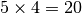

Example 2 : Understanding the hyper-parameter optimization¶
If you are not familir with hyper-parameter optimization, see Hyper-parameters 101
Hands-on experience¶
In order to understand the process and it’s usefulness, let’s run some configurations and analyze the results.
This example will focus only on some lines of the configuration file :
split:, controlling the ration of size between the testing set and the training set,hps_type:, controlling the type of hyper-parameter search,hps_args:, controlling the parameters of the hyper-parameters search method,nb_folds:, controlling the number of folds in the cross-validation process.
Example 2.1 : No hyper-parameter optimization, impact of split size¶
For this example, we only used a subset of the available classifiers in SuMMIT, to reduce the computation time and the complexity of the results.
Each classifier will first be learned on the default hyper-parameters (as in Example 1)
The monoview classifiers that will be used are Adaboost and a decision tree, and the multivew classifier is a late fusion majority vote. In order to use only a subset of the available classifiers, three lines in the configuration file are useful :
type:(l45) in which one has to specify which type of algorithms are needed, here we usedtype: ["monoview","multiview"],algos_monoview:(l47) in which one specifies the names of the monoview algorithms to run, here we used :algos_monoview: [“decision_tree”, “adaboost”, ]algos_multiview:(l49) is the same but with multiview algorithms, here we used :algos_multiview: [“majority_voting_fusion”, ]
In order for the platform to understand the names, the user has to give the name of the python module in which the classifier is implemented in the platform.
In the config file, the default values for Adaboost’s hyper-parameters are :
adaboost:
n_estimators: 50
base_estimator: "DecisionTreeClassifier"
(see adaboost’s sklearn’s page for more information)
For the decision tree :
decision_tree:
max_depth: 3
criterion: "gini"
splitter: "best"
And for the late fusion majority vote :
majority_voting_fusion:
classifier_names: ["decision_tree", ]
classifier_configs:
decision_tree:
max_depth: 3
criterion: "gini"
splitter: "best"
(It will build a vote with one decision tree on each view, with the specified configuration for the decision trees)
Learning on a few examples¶
To run this example run,
>>> from multiview_platform.execute import execute
>>> execute("example 2.1.1")
The results for accuracy metric are stored in multiview_platform/examples/results/example_2_1_1/doc_summit/
Fake HTML Figure
Fake HTML Figure
Fake HTML Figure
Fake HTML Figure
Fake HTML Figure
Fake HTML Figure
These results were generated learning on 20% of the dataset and testing on 80% (see the config file).
Learning on more examples¶
Now, if you run :
>>> from multiview_platform.execute import execute
>>> execute("example 2.1.2")
You should obtain these scores in multiview_platform/examples/results/example_2_1/doc_summit/ :
Fake HTML Figure
Fake HTML Figure
Fake HTML Figure
Fake HTML Figure
Fake HTML Figure
Fake HTML Figure
Here we learned on 80% of the dataset and tested on 20%, so the line in the config file has become split: 0.2.
The difference between these two examples is noticeable as even if, while learning on more examples, the performance of the decision trees and the late fusion improved, the performance of Adaboost did not improve as it was already over-fitting on the small train set.
Conclusion¶
The split ratio has two consequences : - Increasing the test set size decreases the information available in the train set size so either it helps to avoid overfitting (Adaboost) or it can hide useful information to the classifier and therefor decrease its performance (decision tree), - The second consequence is that decreasing test size will increase the benchmark duration as the classifier will have to learn on more examples, this duration modification is higher if the dataset has high dimensionality and if the algorithm is algorithmically complex.
Example 2.2 : Usage of randomized hyper-parameter optimization :¶
In the previous example, we have seen that the split ratio has an impact on the train duration and performance of the algorithms, b the most time-consuming task is optimizing their hyper parameters.
For all the previous examples, the platform used the hyper-parameters values given in the config file. This is only useful if one knows the optimal combination of hyper-parameter for the given task.
However, most of the time, they are unknown to the user, and then have to be optimized by the platform.
In this example, we will use an randomized search, one of the two hyper-parameter optimization methods implemented in SuMMIT, to do so we will go through five lines of the config file :
hps_type:, controlling the type of hyper-parameter search,n_iter:, controlling the number of random draws during the hyper-parameter search,equivalent_draws:, controlling the number fo draws for multiview algorithms,nb_folds:, controlling the number of folds in the cross-validation process,metric_princ:, controlling which metric will be used in the cross-validation.
So if you run SuMMIT with :
>>> from multiview_platform.execute import execute
>>> execute("example 2.2")
you run SuMMIT with this combination of arguments (l54-65) :
metric_princ: 'accuracy_score'
nb_folds: 5
hps_type: 'Random'
hps_args:
n_iter: 5
equivalent_draws: True
This means that SuMMIT will use a modded multiview-compatible version of sklearn’s RandomisedSearchCV with 5 draws and 5 folds of cross validation to optimize the hyper-parameters, according to the accuracy.
Moreover, the equivalent_draws: True argument means that the multiview classifiers will be granted n_iter x n_views draws so, here  draws, to compensate the fact that they have a much more complex problem to solve.
The computing time of this run should be longer than the previous examples (approximately 10 mins). While SuMMIT computes, let’s see the pseudo code of the benchmark, while using the hyper-parameter optimization:
for each monoview classifier:
for each view:
┌
|for each draw (here 5):
| for each fold (here 5):
| learn the classifier on 4 folds and test it on 1
| get the mean metric_princ
|get the best hyper-parameter set
└
learn on the whole training set
and
for each multiview classifier:
┌
|for each draw (here 5*4):
| for each fold (here 5):
| learn the classifier on 4 folds and test it on 1
| get the mean metric_princ
|get the best hyper-parameter set
└
learn on the whole training set
The instructions inside the brackets are the one that the hyper-parameter optimization (HPO) adds.
Note
As the randomized search has independent steps, it profits a lot from multi-threading, however, it is not available at the moment, but is one of our priorities.
The results¶
Here, we used split: 0.8 and the results are far better than earlier, as the classifiers are able to fit the task (the multiview classifier improved its accuracy from 0.46 in example 2.1.1 to 0.59).
Fake HTML Figure
Fake HTML Figure
Fake HTML Figure
Fake HTML Figure
Fake HTML Figure
Fake HTML Figure
The choice made here is to allow a different amount of draws for mono and multiview classifiers. However, allowing the same number of draws to both is also available by setting :yaml:` equivalent_draws: False`.
Note
The mutliview algorithm used here is late fusion, which means it learns a monoview classifier on each view and then build a naive majority vote. In terms of hyper parameters, the late fusion classifier has to choose one monoview classifier and its HP for each view. This is why the equivalent_draws: parameter is implemented, as with only 5 draws, the late fusion classifier is not able to remotely cover its hyper-parameter space, while the monoview algorithms have a much smaller problem to solve.
Conclusion¶
Even if it adds a lot of computing, for most of the tasks, using the HPO is a necessity to be able to get the most of each classifier in terms of performance.
The HPO is a matter of trade-off between classifier performance and computational demand. For most algorithms the more draws you allow, the closer to ideal the outputted hyper-parameter (HP) set one will be, however, many draws mean much longer computational time.
Similarly, the number of folds has a great importance in estimating the performance of a specific HP set, but more folds take also more time, as one has to train more times and on bigger parts of the dataset.
The figure below represents the duration of the execution on a personal computer with different fold/draws settings :
Fake HTML Figure
Fake HTML Figure
Fake HTML Figure
Fake HTML Figure
Fake HTML Figure
Fake HTML Figure
Note
The durations are for reference only as they highly depend on the hardware.
Example 2.3 : Usage of grid search :¶
In SuMMIT, it is possible to use a grid search if one has several possible hyper-parameter values in mind to test.
In order to set up the grid search one has to provide in the hps_args:
argument the names, parameters and values to test. If one wants to try
several depths for a decision tree, and several n_estimators values for Adaboost,
hps_type: "Grid"
hps_args:
decision_tree:
max_depth: [1,2,3,4,5]
adaboost:
n_estimators: [10,15,20,25]
Moreover, for the multiview algorithms, we would like to try two configurations for the late fusion classifier :
weighted_linear_late_fusion:
classifiers_names:
- ["decision_tree", "decision_tree", "decision_tree", "decision_tree"]
- ["adaboost", "adaboost", "adaboost", "adaboost",]
classifier_configs:
- decision_tree:
max_depth: 3
adaboost:
n_estimators: 10
This will try to run the late fusion classifier with either
- one decision tree per view, with a maximum depth of 3,
- one Adaboost per view with 10 base estimators.
Hyper-parameter report¶
The hyper-parameter optimization process generates a report for each classifier, providing each set of parameters and its cross-validation score, to be able to extract the relevant parameters for a future benchmark on the same dataset.
For most of the algorithms, it is possible to paste the report in the config fie,
for example for the decision tree on the first view the *-hps_report.txt file generated by the randomized search of example 2.2 looks like :
criterion: gini
max_depth: 202
splitter: random
0.28787878787878785
criterion: gini
max_depth: 217
splitter: best
0.23939393939393935
criterion: entropy
max_depth: 292
splitter: random
0.21818181818181817
criterion: entropy
max_depth: 275
splitter: best
0.20454545454545453
criterion: entropy
max_depth: 182
splitter: best
0.20454545454545453
Meaning that the cross validation score of the decision tree on the first view when using the following hyper-parameters is 0.2879.
criterion: gini
max_depth: 202
splitter: random
So to run a decision tree with these exact parameters, one just has to follow the method of example 2.1 and run SuMMIT with the following hyper-parameter configuration :
hps_type: "None"
hps_args:
decision_tree:
criterion: gini
max_depth: 202
splitter: random